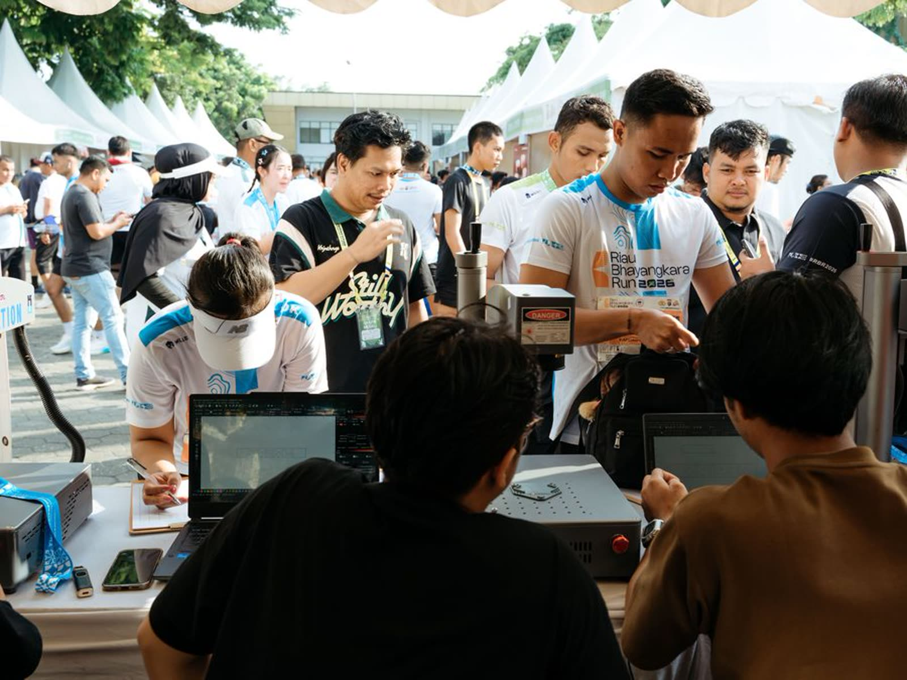

Grafir medal finisher untuk event lari di seluruh Indonesia

Medal finisher hampir selalu punya bidang kosong di bagian belakang. Kami grafir bidang itu dengan nama peserta dan catatan waktu resminya, dikerjakan di lokasi acara pada hari itu juga.
Layanan ini bisa kami bawa ke event Anda. Penyelenggara tidak mengeluarkan biaya, dan tidak ada pekerjaan tambahan untuk tim Anda.
Ajukan event AndaKami mengukir medal dalam jam menggunakan unit laser. Satu medal selesai rata-rata detik. Dari total peserta yang finis, persen memilih mengukir medalnya.
Peserta mendaftar sendiri saat pengambilan racepack, menyerahkan medalnya di booth kami setelah finis, lalu mengambilnya kembali sudah terukir.
Dari penyelenggara kami hanya perlu satu meja di area finisher dan flyer yang masuk racepack. Selebihnya tidak ada.
Peralatan kami portabel dan berangkat bersama tim. Kami mengerjakan acara di kota mana pun di Indonesia.
Di lokasi kami hanya perlu area beratap, meja, dan listrik watt per unit laser. Selebihnya kami bawa sendiri.
Biaya perjalanan dan akomodasi tim dihitung terpisah menurut kota acara, dan umumnya bisa dimasukkan ke dalam paket sponsor. Konfirmasi kami perlukan paling lambat minggu sebelum hari acara.
Hanya peserta yang mau saja yang membayar, langsung ke kami. Ini cara paling ringan untuk mulai: penyelenggara tidak mengeluarkan biaya dan tidak ikut mengurus operasional.
Satu brand membiayai seluruh peserta, dan namanya ikut terukir di medal. Bedanya dengan spanduk atau booth: ukiran itu ikut pulang bersama pesertanya dan bertahan bertahun-tahun. Untuk penyelenggara, ini satu slot aktivasi baru yang bisa dijual, bukan pengeluaran.
Anda membeli sejumlah kuota dan menjadikannya benefit kategori tertentu — misalnya khusus finisher half marathon. Harga per medal menurun mengikuti jumlah.
Desain flyer dan materi media sosial kami produksi sendiri, menyesuaikan identitas visual acara Anda. Iklan berbayar ke peserta juga kami jalankan dengan anggaran kami.
Yang kami perlukan dari penyelenggara hanya izin pemakaian logo acara.
Seluruh Indonesia. Peralatan kami portabel dan berangkat bersama tim.
Peserta, sponsor, atau penyelenggara secara borongan. Pada dua model pertama penyelenggara tidak mengeluarkan biaya sama sekali.
Satu meja di area finisher, flyer yang masuk racepack, dan izin pemakaian logo acara.
Medal logam seperti zinc alloy, kuningan, dan besi berlapis. Kami tes dulu pada sampel medal sebelum hari acara.
Grafir medal finisher, dikerjakan di lokasi acara Anda.
Isi keterangan di bawah, pesannya langsung masuk ke WhatsApp kami. Kami balas dengan perkiraan biaya dan kebutuhan ruang di lokasi.